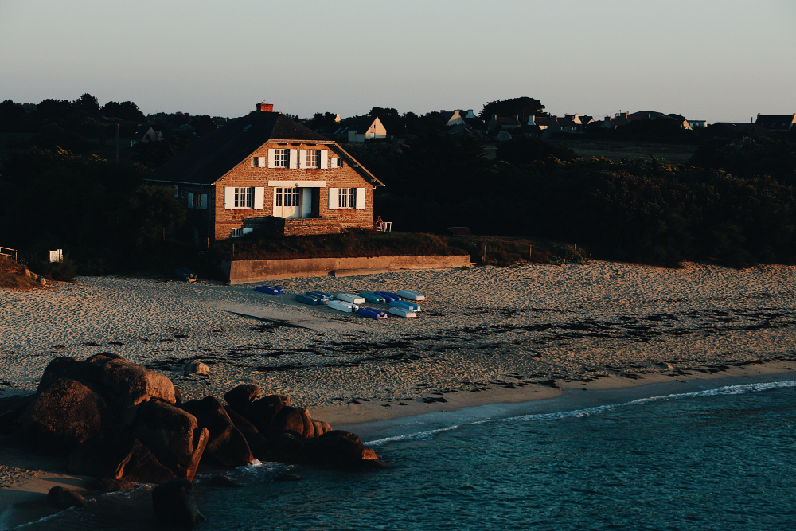
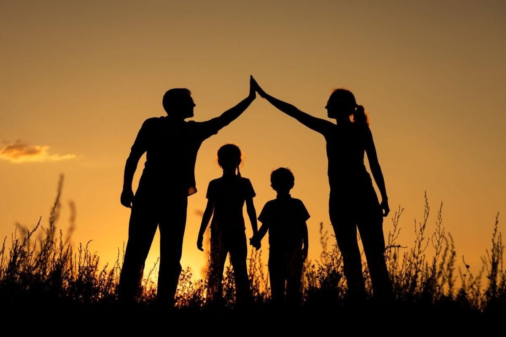

Меня зовут Ирина. Мне 36. Я родилась в Беларуси в городе Новополоцк.
Первое образование мое было - это конечно же школа. Я закончила 11 классов "на отлично" и поступила в университет на инженера-технолога по специальности "Водоснабжение, водоотведение и охрана водных ресурсов". По окончании первого курса я перевелась на заочное обучение и устроилась на работу, чтобы себя самой обеспечивать. По окончании университета на работу инженером я так и не смогла устроиться, т.к. специалистов без опыта работы не берут (если только ты не яаляешься родственником начпльника). Поэтому я осталась работать в казино и устроилась дополнительно на предприятие по водоснабжению и водоотведению города оператором насосных установок. В декретный отпуск со вторым ребенком я уходила с двух работ. Где-то в середине декретного отпуска я поняла, что не вернусь на водоканал, так как оказалось, что хорошо работать и иметь высшее образование недостаточно чтобы получить должность инженера (нужно просто иметь "те самые рожственные связи"). И вот, к началу 2020 года я отучилась полгода в колледже на парикмахера-универсала, колориста, реконструктора волос. Работала на дому.
К концу 2020 нам с иужем и детьми пришлось бежать в Польшу. В Польше нужно было срочно найти работу, а без знания языка мои образования "отдыхали". И вот я второй год работаю на складе фирменной одежды. На данный момент обучаюсь на программиста, учусь в авто-школе и еще планирую "взяться" за английский. Сложно конечно совмещать работу, два обучения и заботу о семье, но я верю в успех!
Какая может быть мечта у такой как я? Конечно же это свой дом на берегу моря или озера! Конечно же это возможность вернуться в родную страну! И, конечно же, чтобы любимые и дорогие мне люди были счастливы и здоровы!
 